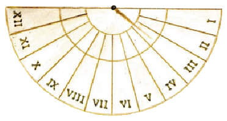

ANNVS ET MÉNSÉS
I
Annus in duodecim mēnsēs dīviditur, quibus haec sunt nōmina: Iānuārius, mēnsis prīmus; Februārius, secundus; Mārtius, tertius; Aprīlis, quārtus; Māius, quīntus; Iūnius, sextus; Iūlius, septimus; Augustus, octāvus; September, nōnus; Octōber, decimus; November, ūndecimus; December, mēnsis duodecimus ac postrēmus.
Ūnus annus duodecim mēnsēs vel trecentōs sexāgintā quīnque diēs habet. Saeculum est centum annī. Centum annī vel saeculum est longum tempus. Duo saecula sunt ducentī annī. Homō sānus nōnāgintā vel etiam centum annōs vīvere potest; ducentōs annōs vīvere nēmō potest.
Mēnsī prīmō et mēnsī tertiō ā deīs nōmina sunt: Iānuāriō ā deō Iānō, Mārtiō ā deō Mārte. Iānus et Mārs sunt deī Rōmānī. Iānus est deus cui duae faciēs sunt. Mārs deus bellī est.
Mēnsis September nōminātur ā numerō septem; Octōber, November, December ab octō, novem, decem. Nam tempore antīquō Mārtius mēnsis prīmus erat. Tunc September mēnsis septimus erat; Octōber, November, December mēnsēs octāvus, nōnus, decimus erant. Nunc autem mēnsis prīmus est Iānuārius; September igitur mēnsis nōnus est, Octōber decimus, November ūndecimus, December duodecimus.
Quam longus est mēnsis November? November trīgintā diēs longus est. December ūnum et trīgintā diēs habet. Iānuārius tam longus est quam December, sed Februārius brevior est: duodētrīgintā aut ūndētrīgintā diēs tantum habet. Februārius brevior est quam cēterī ūndecim mēnsēs: is mēnsis annī brevissimus est. Mārtius ūnum et trīgintā diēs longus est (et item Māius, Iūlius, Augustus, Octōber). Aprīlis trīgintā diēs habet (item Iūnius et September). Sex mēnsēs sunt dīmidia pars annī, trēs mēnsēs quārta pars annī.
Diēs est dum sōl in caelō est. Prīma pars diēī est māne, pars postrēma vesper. Diēs est tempus ā māne ad vesperum. Nox est tempus ā vesperō ad māne. Vesper est fīnis diēī atque initium noctis. Māne fīnis noctis est atque initium diēī.

Diēs in duodecim hōrās dīviditur. Ab hōrā prīmā diēs initium facit. Hōra sexta, quae hōra media est inter hōram prīmam et duodecimam, ‘merīdiēs’ nōminātur. Hōra sexta vel merīdiēs diem dīvidit in duās aequās partēs: ‘ante merīdiem’ et ‘post merīdiem’. Merīdiē sōl altissimus in caelō est. Sex hōrae sunt dīmidia pars diēī.
II
Nocte sōl nōn lūcet, sed lūna et stēllae lūcent. Lūna ipsa suam lūcem nōn habet, lūx lūnae ā sōle venit; itaque lūna nōn tam clāra est quam sōl. Sōl est stēlla clārissima, quae lūce suā et terram et lūnam illūstrat. Neque tōta lūna sōle illūstrātur, sed tantum ea pars quae vertitur ad sōlem; cētera pars obscūra est. Cum exigua pars lūnae tantum vidētur, lūna ‘nova’ esse dīcitur. Diē septimō vel octāvō post lūnam novam lūna dīmidia vidētur, quae fōrmam habet litterae D. Diē quīntō decimō post lūnam novam lūna plēna est et fōrmam habet litterae O. Cum lūna nōn lūcet , nox obscūra est.
Diēs mēnsis prīmus ‘kalendae’ nōminātur. Diēs prīmus mēnsis Iānuāriī dīcitur ‘kalendae Iānuāriae’; is diēs annī prīmus est atque initium annī novī. Diēī prīmō mēnsis Iūliī ‘kalendae Iūliae’ nōmen est; is est diēs annī medius.
Diēs tertius decimus post kalendās ‘īdūs’ nōminātur. ‘Īdūs Iānuāriae’ diēs tertius decimus est post kalendās Iānuāriās. Item ‘īdūs Februāriae’ dīcitur diēs tertius decimus mēnsis Februāriī. Sed ‘īdūs Mārtiae’ diēs est quīntus decimus mēnsis Mārtiī, nam mēnse Mārtiō (item Māiō, Iūliō, Octōbrī) īdūs nōn diēs tertius decimus, sed quīntus decimus post kalendās est. Diēs nōnus ante īdūs dīcitur ‘nōnae’ (nōnae Iānuāriae: diēs quīntus Iānuāriī; nōnae Februāriae: diēs quīntus Februāriī; nōnae Mārtiae: diēs septimus Mārtiī; cēt.)
Diēs octāvus ante kalendās Iānuāriās, quī dīcitur ‘ante diem octāvum kalendās Iānuāriās’, est diēs annī brevissimus. Ante diem octāvum kalendās Iūliās diēs annī longissimus est. Ante diem octāvum kalendās Aprīlēs (id est diē octāvō ante kalendās Aprīlēs) nox atque diēs aequī sunt; is diēs ‘aequinoctium’ dīcitur. Item ante diem octāvum kalendās Octōbrēs aequinoctium dīcitur, nam eō quoque diē nox aequa est atque diēs.
Tempora annī sunt quattuor: aestās et hiems, vēr et autumnus. Aestās est tempus ā mēnse Iūniō ad Augustum, hiems ā mēnse Decembrī ad Februārium. Mēnsis Iūnius initium aestātis, December initium hiemis est. Tempus ā Mārtiō ad Māium vēr dīcitur, ā mēnse Septembrī ad Novembrem autumnus. Vēr ā mēnse Mārtiō initium facit. Autumnus ā Septembrī incipit.
Aestāte diēs longī sunt, sōl lūcet, āēr calidus est. Aestās est tempus calidum. Hiems tempus frīgidum est. Hieme nōn sōlum imber, sed etiam nix dē caelō cadit. Imber est aqua quae dē nūbibus cadit. Nix frīgidior est quam imber. Hieme montēs et campī nive operiuntur. Vēre campī novā herbā operiuntur, arborēs novīs foliīs ōrnantur; avēs, quae hieme tacent, rūrsus canere incipiunt. In Germāniā hiemēs frīgidiōrēs sunt quam in Italiā: altā nive operītur tōta terra et lacūs glaciē operiuntur; hieme Germānī puerī super glaciem lacuum lūdere possunt. Iānuārius mēnsis annī frīgidissimus est. Mēnsēs calidissimī sunt Iūlius et Augustus. Eō tempore multī Rōmānī urbem relinquunt et vīllās suās petunt, neque enim tōtam aestātem in urbe vīvere volunt.
III
Hōra nōna est. Aemilia apud fīlium aegrum sedet. Cubiculum lūce sōlis illūstrātur. Aemilia ad fenestram it caelumque spectat.
Aemilia: “Hōra nōna est. Sōl altus in caelō est nec nūbibus operītur.”
Quīntus: “Quandō sōl altissimus est?”
Aemilia: “Hōrā sextā vel merīdiē. Sed post merīdiem āēr calidior est quam ante merīdiem.”
Aemilia fenestram claudit. Iam satis obscūrum est cubiculum.
Quīntus: “Ō, quam longae sunt hōrae cum necesse est tōtum diem in lectō iacēre!”
Aemilia: “Vēr est. Diēs atque hōrae longiōrēs sunt vēre quam hieme.”
Quīntus: “Quandō longissimī sunt diēs?”
Aemilia: “Mēnse Iūniō.”
Quīntus: “Iamne mēnsis Iūnius est?”
Aemilia: “Māius est: hic diēs est mēnsis Māiī postrēmus. Hōc annī tempore diēs nōn tam calidī sunt quam aestāte et noctēs frīgidiōrēs sunt.”
Quīntus: “Quī mēnsis annī calidissimus est?”
Aemilia: “Iūlius.”
Quīntus: “Cūr ille mēnsis patris nōmen habet?”
Aemilia rīdet et respondet: “Mēnsis Iūlius nōn ā patre tuō nōmen habet — nōn tantus vir est ille! — sed ā Iūliō Caesare. Ante tempora Caesaris eī mēnsī erat nōmen ‘Quīntīlis’ ā ‘quīntō’ numerō — nōn ā nōmine tuō!”
Quīntus: “Estne Iūlius mēnsis quīntus?” Puer digitīs numerāre incipit: “Mēnsis prīmus Iānuārius, secundus Februārius, tertius Mārtius, quārtus...”
Aemilia: “Antīquīs temporibus Mārtius nōn tertius, sed prīmus mēnsis erat; tunc igitur Quīntīlis, quī nunc Iūlius nōminātur, mēnsis quīntus erat, nōn septimus, ut nunc est. Item mēnsī Augustō nōmen erat ‘Sextīlis’, quia sextus erat; nunc Augustus nōminātur ā Caesare Augustō. Sed hoc satis est. Iam necesse est tē dormīre.” Māter enim faciem fīliī aspicit eumque oculōs claudere videt. Aemilia puerum dormīre velle putat.
Quīntus: “Sed diēs est. Sōl lūcet. Nocte iubē mē dormīre, cum sōl in caelō nōn est! Ubi sōl est nocte, cum hīc nōn lūcet?”
Aemilia: “Cum hīc nox est, sōl lūcet in aliīs terrīs procul ab Italiā et ab urbe Rōmā. Cum nox est illīc, hīc in Italiā diēs est.”
Quīntus: “Ergō nunc in aliīs terrīs et urbibus nox est atque hominēs dormiunt. Hīc diēs est, nec tempus est dormīre!”
* * *
GRAMMATICA LATÍNA
Dēclīnātiō quīnta
Diēs brevissimus est ante diem VIII kalendās Iānuāriās. Māne initium diēī est. Diēī prīmō Iānuāriī nōmen est kalendae Iānuāriae; ab eō diē incipit novus annus. Mēnse Iūniō diēs longī sunt. Iūnius XXX diēs habet: numerus diērum est XXX. Diēbus prīmīs mēnsium nōmina sunt: kalendae Iānuāriae, Februāriae, Mārtiae, Aprīlēs, cēt. Ab iīs diēbus mēnsēs incipiunt.
Sing. Plūr.
Nom. di|ēs di|ēs
Acc. di|em di|ēs
Gen. di|ēī di|ērum
Dat. di|ēī di|ēbus
Abl. di|ē di|ēbus
Ut ‘diēs’ (m) dēclīnātur ‘merīdiēs’ (m), item ‘faciēs’ (f), ‘glaciēs’ (f) et pauca alia vocābula fēminīna.
‘Māne’ est vocābulum neutrum indēclīnābile.
Superlātīvus
Aetna mōns altus est, altior quam cēterī montēs Siciliae: is mōns Siciliae altissimus est.
Via Appia longa est, longior quam cēterae viae Italiae: ea via Italiae longissima est.
‘Īre’ verbum breve est, brevius quam cētera verba Latīna: id verbum Latīnum brevissimum est.
‘Altior’, ‘longior’, ‘brevius’ comparātīvus est. ‘Altissimus’, ‘longissima’, ‘brevissimum’ superlātīvus est. Superlātīvus est adiectīvum dēclīnātiōnis I et II: -issim|us -a -um.
* * *
AD CAPITVLVM